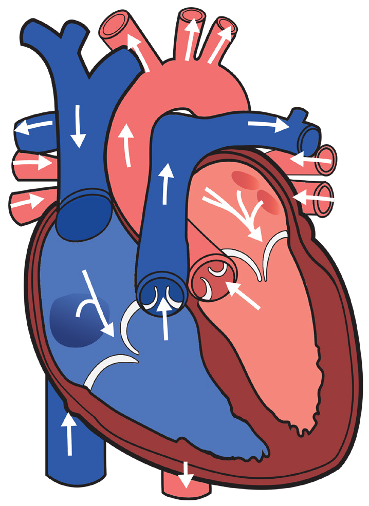

100
Student’s Book - Form Two
Biology for Secondary Schools
The internal structure of the mammalian heart
Internally, the human heart consists of four chambers, which are the right auricle, right ventricle, left auricle, and left ventricle, as shown in Figure
5.2. The auricles are also called atria
(singular, atrium). The walls of the ventricles are thicker than those of the auricles. This is because the ventricles pump blood to a longer distance than the auricles. Auricles or atria pump blood to the ventricles and then ventricles pump blood to all other parts of the body. The walls of the left ventricle are thicker than the walls of the right ventricle because they left ventricle pumps oxygenated blood to the rest of the body. Therefore, much pressure is required to pump blood.
The right ventricle pumps blood to the
lungs. The lungs are close to the heart.
Therefore, it does not require much pressure to pump blood.
The heart has various valves that control the flow of blood between the atria and ventricles. The valves have flaps that ensure blood flows in only one direction. The tricuspid valve is found between the right auricle and right ventricle. The bicuspid valve is found between the left auricle and left ventricle. Semilunar valves are located at the bases of the pulmonary artery and aorta to prevent blood from flowing back into the ventricles. The valves close when blood tries to flow back.
The left and right sides of the heart are separated by the septum, which is a muscular wall that prevents mixing of oxygenated and deoxygenated blood.

Aorta
Pulmonary artery
Superior vena cava
Semilunar valves
Right auricle
Tricuspid valve
Inferior vena cava
Right ventricle
Pulmonary veins
Left auricle
Bicuspid valve
Left ventricle
Septum
Figure 5.2: Internal structure of the mammalian heart
08/04/2026 10:18:29